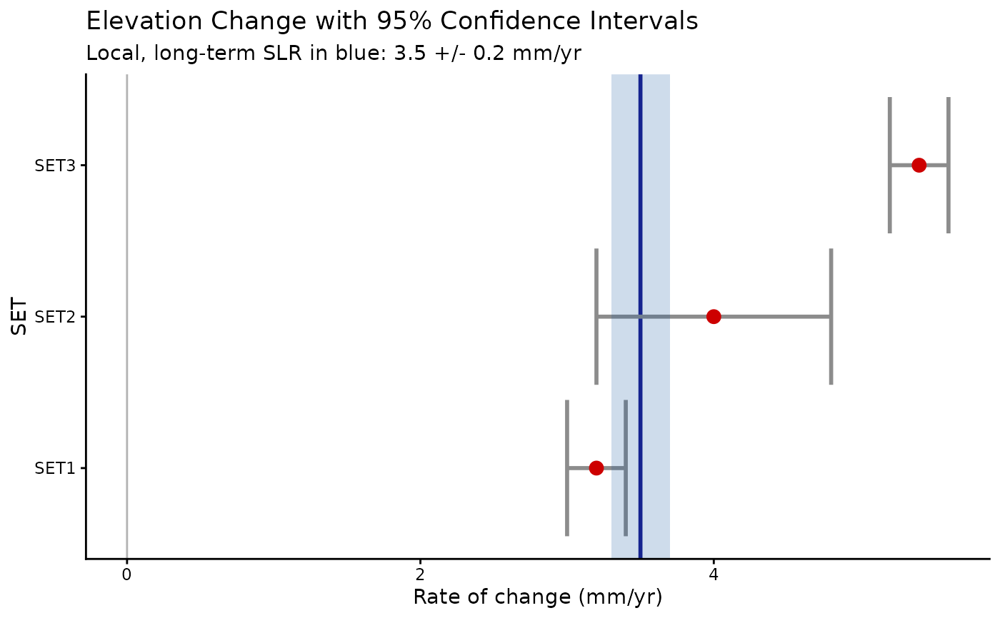
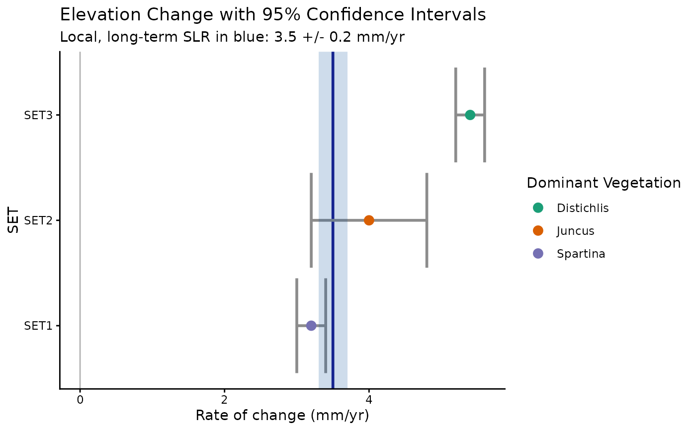
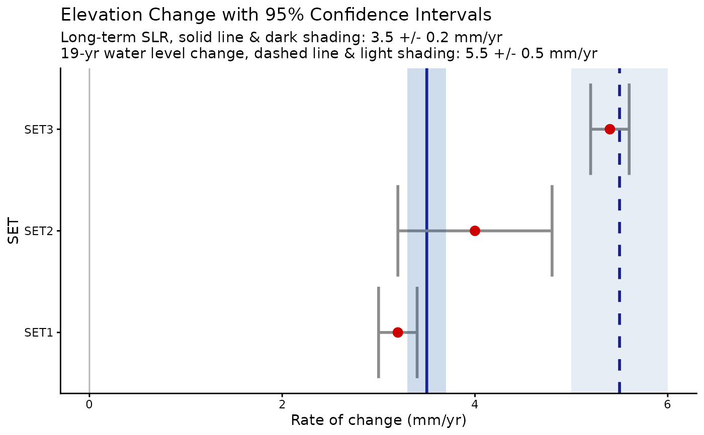
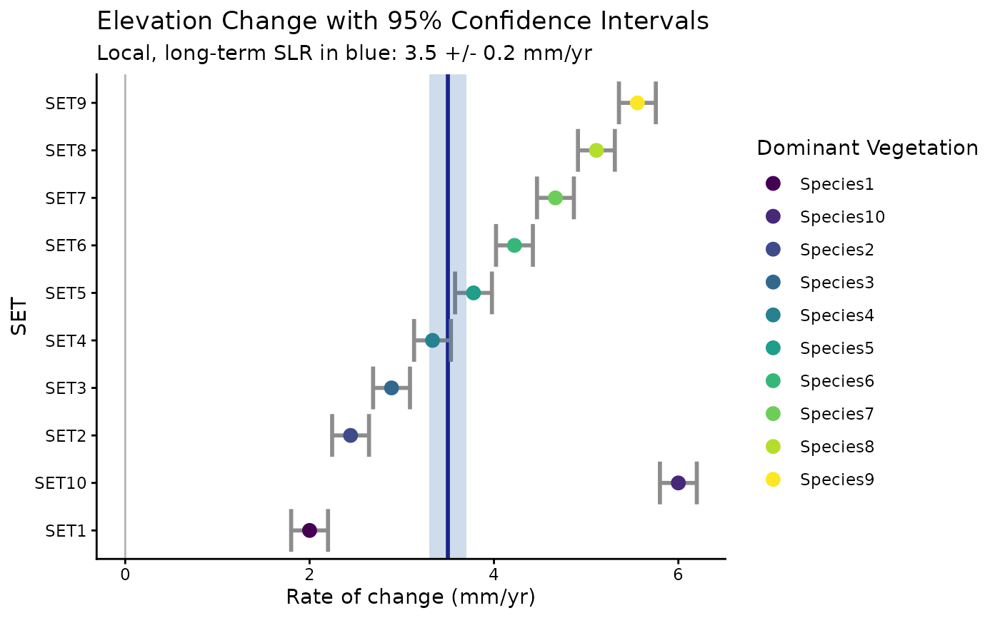
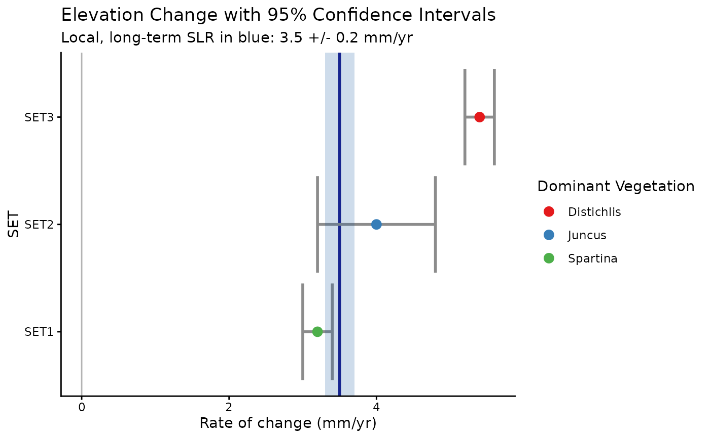

Graphical comparison of SET change rates to SLR
Usage
plot_rate_comps(
data,
plot_type = 3,
color_by_veg = FALSE,
set_ids,
set_ci_low,
set_ci_high,
rates,
comp1,
comp1_ci_low,
comp1_ci_high,
comp2 = NULL,
comp2_ci_low = NULL,
comp2_ci_high = NULL,
veg,
veg_palette = "auto"
)Arguments
- data
a data frame
- plot_type
one of various combinations of points and confidence intervals; default is 3. 1 = basic; points only; no confidence intervals 2 = CIs for SET rates, but not sea level rise (SLR) 3 = CIs for both SETs and SLR 4 = all of the above, plus a second comparison point and CIs
- color_by_veg
TRUE or FALSE (the default), for whether the points representing SET elevation change rates should be colored according to dominant vegetation at or around the station (if TRUE, the dominant vegetation must be in a column identified by the `veg` argument of this function)
- set_ids
column or vector containing unique SET IDs or names
- set_ci_low
column or vector of numbers representing the lower limit of the 95% confidence interval for the SET's rate of elevation change
- set_ci_high
column or vector of numbers representing the upper limit of the 95% confidence interval for the SET's rate of elevation change
- rates
column or vector of numbers representing the point estimates of SET rates of elevation change
- comp1
single number that will make a line on the graph (e.g. long-term Sea Level Rise)
- comp1_ci_low
single number representing the lower limit of the 95% confidence interval for the point estimate `comp1`
- comp1_ci_high
single number representing the upper limit of the 95% confidence interval for the point estimate `comp1`
- comp2
optional; another single point estimate to use for a line on the graph (e.g. 19-year water level change)
- comp2_ci_low
optional; a single number representing the lower limit of the 95% confidence interval for the point estimate `comp2`
- comp2_ci_high
optional; a single number representing the upper limit of the 95% confidence interval for the point estimate `comp2`
- veg
column or vector containing names of the dominant vegetation type at each SET
- veg_palette
Palette used to color points by `veg` when `color_by_veg = TRUE`. Default `"auto"` uses the ColorBrewer `"Dark2"` qualitative palette (its usual look) when there are 8 or fewer distinct vegetation categories in the data, and automatically switches to a `viridis` scale – which supports any number of categories – when there are more than 8. Set this to the name of any RColorBrewer qualitative palette (e.g. `"Set1"`, `"Paired"`, `"Accent"`) to use that one instead, or to `"viridis"` to force the viridis scale regardless of category count.
Examples
example_rates <- data.frame("set_id" = c("SET1", "SET2", "SET3"),
"set_rate" = c(3.2, 4.0, 5.4),
"ci_low" = c(3.0, 3.2, 5.2),
"ci_high" = c(3.4, 4.8, 5.6),
"veg" = c("Spartina", "Juncus", "Distichlis"))
plot_rate_comps(data = example_rates,
set_ids = set_id,
set_ci_low = ci_low,
set_ci_high = ci_high,
rates = set_rate,
comp1 = 3.5,
comp1_ci_low = 3.3,
comp1_ci_high = 3.7)

plot_rate_comps(data = example_rates,
set_ids = set_id,
color_by_veg = TRUE,
set_ci_low = ci_low,
set_ci_high = ci_high,
rates = set_rate,
comp1 = 3.5,
comp1_ci_low = 3.3,
comp1_ci_high = 3.7,
veg = veg)

plot_rate_comps(data = example_rates,
plot_type = 4,
set_ids = set_id,
set_ci_low = ci_low,
set_ci_high = ci_high,
rates = set_rate,
comp1 = 3.5,
comp1_ci_low = 3.3,
comp1_ci_high = 3.7,
comp2 = 5.5,
comp2_ci_low = 5.0,
comp2_ci_high = 6.0)

# more than 8 vegetation categories -- veg_palette = "auto" (the default)
# switches to a viridis scale automatically instead of running out of Dark2 colors
example_rates_many_veg <- data.frame(
"set_id" = paste0("SET", 1:10),
"set_rate" = seq(2, 6, length.out = 10),
"ci_low" = seq(1.8, 5.8, length.out = 10),
"ci_high" = seq(2.2, 6.2, length.out = 10),
"veg" = paste0("Species", 1:10))
plot_rate_comps(data = example_rates_many_veg,
set_ids = set_id,
color_by_veg = TRUE,
set_ci_low = ci_low,
set_ci_high = ci_high,
rates = set_rate,
comp1 = 3.5,
comp1_ci_low = 3.3,
comp1_ci_high = 3.7,
veg = veg)

# override the default palette with a different RColorBrewer qualitative palette
plot_rate_comps(data = example_rates,
set_ids = set_id,
color_by_veg = TRUE,
veg_palette = "Set1",
set_ci_low = ci_low,
set_ci_high = ci_high,
rates = set_rate,
comp1 = 3.5,
comp1_ci_low = 3.3,
comp1_ci_high = 3.7,
veg = veg)
